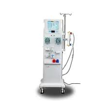

Maquina de Hemodiálise
Equipamento essencial para reverter arritmias cardíacas atráves de choques elétricos controlados.
- Modos manual e automático
- tela digital com indicadores claros
- Bateria recarregável de longa duração
Equipamentos médicos de alta precisão para clinícas e hospitais
Equipamentos de confiançae que salvam vidas🏥
Equipamento essencial para reverter arritmias cardíacas atráves de choques elétricos controlados.
Monitor multiparamétrico com display de alta resolução e alarmes programáveis.
Aparelho que mantém condições adequadas de temperatura, umidade e ventilação para recém-nascidos.
Dispositivo utilizado para administrar medicamentos e soluções com precisão e segurança.
Mesa ajustável utilizada em cirurgias para posicionamento adequado do paciente.
| Produto | Peso | Preço |
|---|---|---|
| Maquina de Hemodiálise | peso de 10 macacos | 20 bananas |
| Monitor Cardíaco MC-200 | peso de 15 macacos | 40 bananas |
| Incubadora Neonatal IN-90 | peso de 20 macacos | 80 bananas | Bomba de Infusão BI-300 | peso de 50 macacos | 25 bananas |
| Mesa Cirúrgica MCX-800 | peso de 46 macacos | 100 bananas descascadas |
Fundada na idade da pedra, a MedTech é referencia em equipamentos medicos de alta tecnologia.
"compromisso com saúde e a tecnologia para salvar vidas." - MedTech